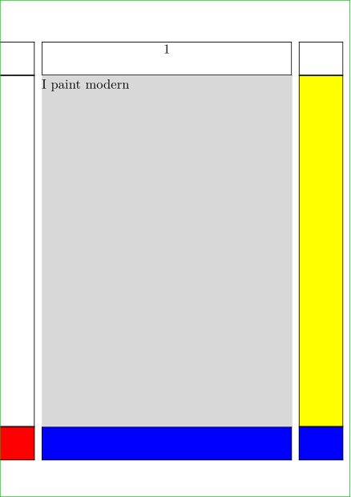
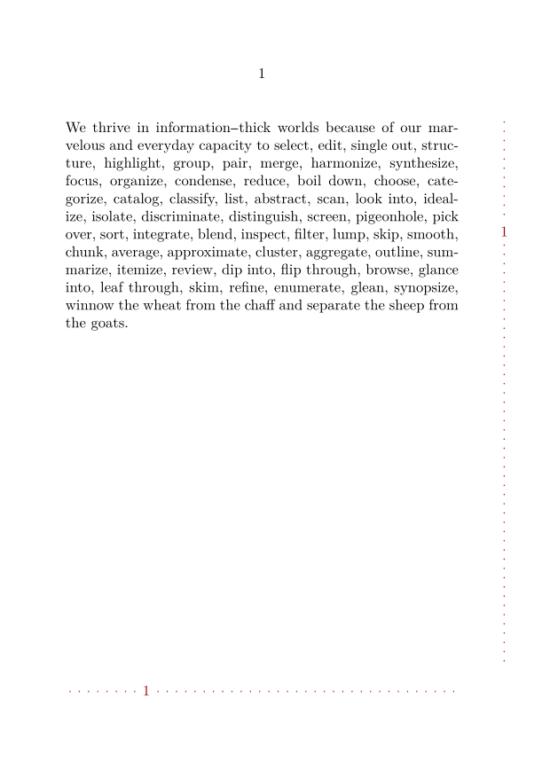

Syntax (autogenerated)
| \setupbackgrounds[...,...][...,...][...=...,...] | |
| [...,...] | top header text footer bottom |
| [...,...] | leftedge leftmargin text rightmargin rightedge |
| ...=...,... | inherits from \setupframed |
| \setupbackgrounds[...,...][...=...,...] | |
| [...,...] | paper page leftpage rightpage text hidden |
| state | start stop |
| ...=...,... | inherits from \setupframed |
Syntax
| \setupbackgrounds[...][...,...,...][...,...=...,...] | |
| [...] | top header text footer bottom page paper leftpage rightpage |
| [...,...,...] | leftedge leftmargin text rightmargin rightedge |
| state | start stop repeat |
| [...,...=...,...] | see \setupframed |
Description
\setupbackgrounds is used to draw frames or backgrounds that cover specific areas of the page, under the text layer.
- The first parameter sets the main layout area;
- the optional second one specifies the linked subarea(s) of the prior. Not all main areas have such subareas.
-
about the third parameter
-
the key
statedetermines when the page background is recalculated.-
state=repeatensures that the page background is always recalculated (useful if you want to use a variable that depends on the current page, such as its number with \realpageno ). -
state=startrecalculates the page background, and stops its automatic recalculation, -
state=stopdoesn't recalculate the page background, and stops its automatic recalculation.
-
-
the key
Because \showframe and \setupbackgrounds both draw frameboxes over parts of the page, the order in which they are invoked matters. In most cases, \setupbackgrounds should come last.
Backgrounds are essential for working with Layers. You enable your defined layers like \setupbackgrounds[page][background=mylayer].
The background key also takes a list, and if you include "foreground", you can also set something on top of your general content, e.g. \setupbackgrounds[page][background={mybacklayer,foreground,mytoplayer}].
Example
-
\setuppapersize[A7] \showframe % \setupbackgrounds should be placed *after* \showframe, \setupbackgrounds [footer] [background=color, backgroundcolor=blue] \setupbackgrounds [footer] [leftmargin] [background=color, backgroundcolor=red] \setupbackgrounds [text] [background=color, backgroundcolor=lightgray] \setupbackgrounds [text] [rightmargin] [background=color, backgroundcolor=yellow] \starttext I paint modern \stoptext
- 
Example of dynamic positioning of page numbering
-
\setuppapersize[A6][A6] \setupbackgrounds[state=repeat] %\showframe \startuseMPgraphic{MonGraphismeV_MP} numeric h ; h := \overlayheight ; numeric w ; w := \overlaywidth ; numeric n ; n := \number\realpageno ; numeric m ; m := \number\lastpageno ; numeric ratio ; ratio := (1-n/(m+1)); numeric e ; e := 0.3mm; picture pa ; pa := textext.raw(btex {\strut\the\realpageno} etex) ; numeric wpa ; wpa := xpart (urcorner pa - ulcorner pa); numeric hpa ; hpa := ypart (ulcorner pa - llcorner pa); pa := pa shifted (-wpa/2 + w/2, ratio * (h-hpa)); pair paA ; paA:= ((ulcorner pa) + (urcorner pa)) / 2 ; pair paB ; paB:= ((llcorner pa) + (lrcorner pa)) / 2 ; draw ((w/2,0)--paB) dashed withdots withpen pencircle scaled e withcolor darkred; draw ((w/2,h)--paA) dashed withdots withpen pencircle scaled e withcolor darkred; draw pa withcolor darkred; \stopuseMPgraphic \startuseMPgraphic{MonGraphismeH_MP} numeric h ; h := \overlayheight ; numeric w ; w := \overlaywidth ; numeric n ; n := \number\realpageno ; numeric m ; m := \number\lastpageno ; numeric ratio ; ratio := (n/(m+1)); numeric e ; e := 0.3mm; picture pa ; pa := textext.raw(btex {\strut\the\realpageno} etex) ; numeric wpa ; wpa := xpart (urcorner pa - ulcorner pa); numeric hpa ; hpa := ypart (ulcorner pa - llcorner pa); pa := pa shifted (ratio * (w-wpa),-hpa/2 + h/2); pair paA ; paA:= ((ulcorner pa) + (llcorner pa)) / 2 ; pair paB ; paB:= ((urcorner pa) + (lrcorner pa)) / 2 ; draw ((0,h/2)--paA) dashed withdots withpen pencircle scaled e withcolor darkred; draw ((w,h/2)--paB) dashed withdots withpen pencircle scaled e withcolor darkred; draw pa withcolor darkred; \stopuseMPgraphic \defineoverlay [MonGraphismeV_OL] [\useMPgraphic{MonGraphismeV_MP}] \defineoverlay [MonGraphismeH_OL] [\useMPgraphic{MonGraphismeH_MP}] \setupbackgrounds [text] [rightmargin] [background={MonGraphismeV_OL}] \setupbackgrounds [footer] [text] [background={MonGraphismeH_OL}] \starttext \dorecurse{4}{\input tufte\page} \stoptext
- 
See also
- Layers
- \setupframed , which is the mechanism used by \setupbackgrounds.
Help from ConTeXt-Mailinglist/Forum
All issues with: